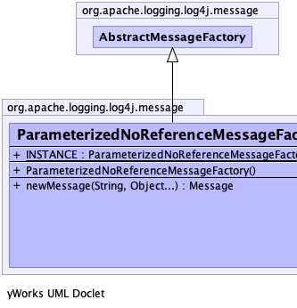
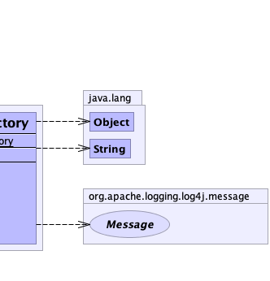

public final class ParameterizedNoReferenceMessageFactory extends AbstractMessageFactory
FormattedMessage instances for MessageFactory2 methods (and MessageFactory by
extension.)
Creates SimpleMessage objects that do not retain a reference to the parameter object.
Intended for use by the StatusLogger: this logger retains a queue of recently logged messages in memory,
causing memory leaks in web applications. (LOG4J2-1176)
This class is immutable.
This class does not implement any MessageFactory2 methods and lets the superclass funnel those calls
through newMessage(String, Object...).
|  |  |
| Modifier and Type | Field and Description |
|---|---|
static ParameterizedNoReferenceMessageFactory |
INSTANCE
Instance of ParameterizedStatusMessageFactory.
|
| Constructor and Description |
|---|
ParameterizedNoReferenceMessageFactory()
Constructs a message factory with default flow strings.
|
| Modifier and Type | Method and Description |
|---|---|
Message |
newMessage(java.lang.String message,
java.lang.Object... params)
Creates
SimpleMessage instances containing the formatted parameterized message string. |
newMessage, newMessage, newMessage, newMessage, newMessage, newMessage, newMessage, newMessage, newMessage, newMessage, newMessage, newMessage, newMessagepublic static final ParameterizedNoReferenceMessageFactory INSTANCE
public ParameterizedNoReferenceMessageFactory()
public Message newMessage(java.lang.String message, java.lang.Object... params)
SimpleMessage instances containing the formatted parameterized message string.message - The message pattern.params - The message parameters.MessageFactory.newMessage(String, Object...)